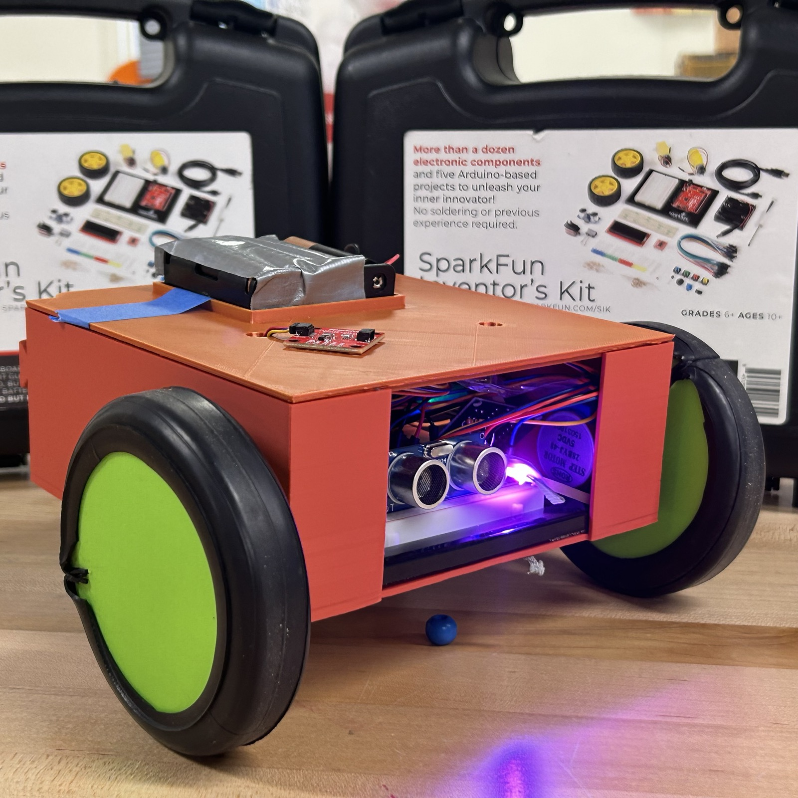
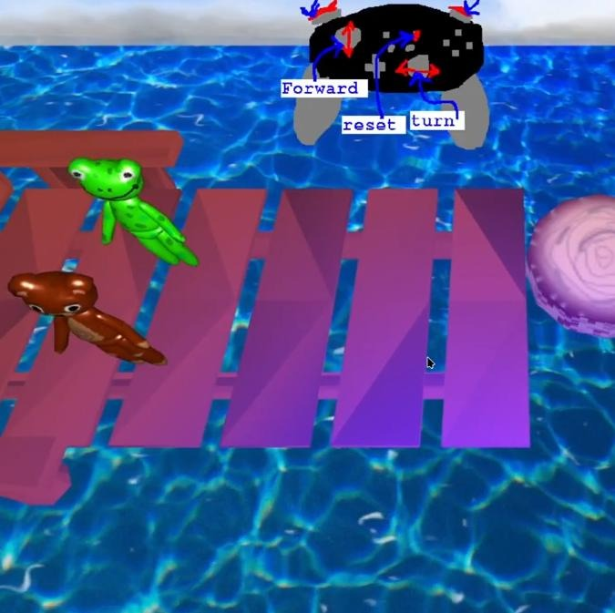
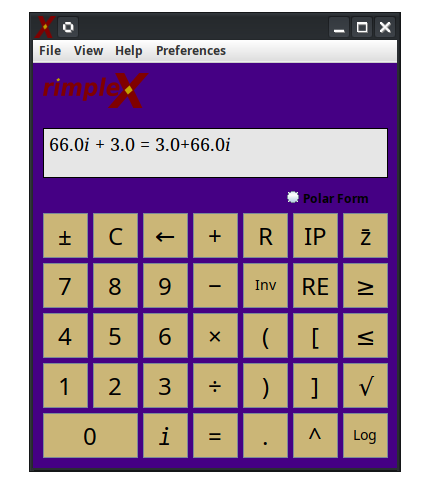
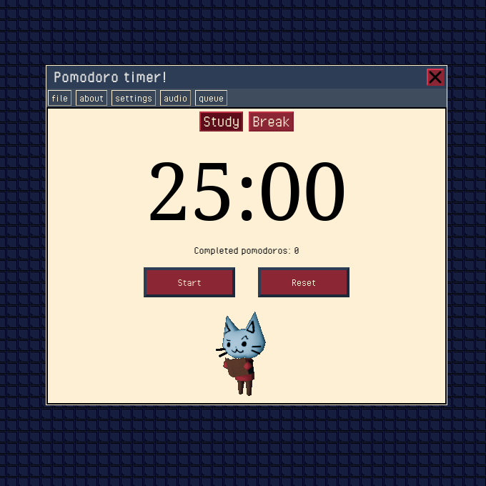

Welcome!
Hey, I'm Ben, a Computer Science master's student at Virginia Tech. I am a passionate programmer and engineer who loves to work with software as well as physical systems. I'm a technical problem solver who thrives on multifaceted high-impact projects. I love taking ideas from a conceptual sketch all the way through to functional, high-performance solutions.
Please click the drop-downs below to see my projects & experience!
HazBot Autonomous Robot

I built this autonomous robot with a team of engineers at JMU during spring 2026.
It is powered by arduino, and is designed to complete an obstacle course based on a variety of sensor data. It has the capability to detect walls, changes in heat, VOCs, lights, and responds accordingly based on the input.
We achieved best-in-class accuracy on the course, with modular, well-designed code, carefully tuned sensors, and custom 3D printed wheels for added precision.
Accompanying the physical bot, we created a detailed CAD assembly based on the included and manufactured parts, as well as a series of drawings to outline the details of each component.
Frog & Bear Platformer Game (WebGL)

I built this web-based 3D video game with a partner at JMU during fall 2025.
It is written from scratch with WebGL and TypeScript, with an engine built from the ground-up. We made this as a part of Dr. Chris Johnson's CS488: Computer Graphics class, and learned a lot from his How to 3D textbook.
The game itself is compatible with all mainstream browsers, and features double controller support. It implements numerous computer graphics technologies, such as animations, textures, blinn-phong lighting, displacement maps, and much more.
Our video demo can be viewed here.
RimpleX Complex Number Calculator

I built this study timer with a project group in the spring of 2025.
This project was built in a simulated software engineering environment, where we recieved specifications from the product owner design a satisfactory product. We used ScrumBoard to track progress and delegate responsibilities. We learned a lot about estimating the amount of time it takes to implement good code. The project was also designed around modularity, so that if the product owner changed their mind about a feature, there would be minimal setbacks, as nothing would have to be rebuilt from the ground up.
The calculator is completely written in Java, and features a Swing GUI. It calculates complex numbers, with a history panel and complex plane graph. It also has a recording feature
The code can be viewed here.
Pomodoro Study Timer

I built this study timer with a friend during the summer of 2024.
We built it from the ground-up with HTML, CSS, and JavaScript. We used the SCRUM framework to delegate tasks, review progress, and handle sprints. We did this to reinforce fundamental software engineering principles that we had learned in college.
The timer features dynamic windows, user data stored in cookies, variable-length study & break time settings. It also features multiple backgrounds, alarms, and background rain noise settings. I personally use it whenever I choose to study with the Pomodoro technique.
The timer can be viewed here.